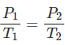

La ley de los gases ideales combina la ecuación de los gases ideales con la teoría cinética de los gases para explicar cómo se comporta un gas ideal. También nos muestra la relación entre la presión, el volumen y la temperatura de un gas.
Los gases
Los gases tienen tres propiedades naturales: volumen, presión y temperatura. Los científicos saben, desde hace tiempo, que existe una relación entre estas tres propiedades. Las partículas del gas se mueven constantemente en una dirección hasta que chocan con algo. Cuando se pone un gas en un recipiente —por ejemplo, un bote de spray— las partículas se mueven dentro y chocan con los lados del bote de spray. Cuando las partículas de un gas rebotan en el interior de un recipiente, se crea una presión; la presión depende, entonces, de la frecuencia y la velocidad de estos rebotes de las partículas.
Puedes aumentar la presión haciendo el recipiente más pequeño. Las moléculas de gas no tienen tanto espacio para desplazarse, por lo que chocan con las paredes más a menudo. También puedes aumentar la presión en un recipiente de gas añadiendo más gas; más gas significa más partículas que rebotan en la pared del recipiente, lo que aumenta la presión.
Asimismo, el aumento de la temperatura del gas incrementa la presión. Cuanto más calientes están las moléculas de gas, más rápido se mueven, y más a menudo chocan con las paredes de un recipiente. Por eso, los botes de aerosol explotan cuando se calientan.
Definición de la ley de los gases ideales
La ley de los gases ideales combina la ecuación de los gases ideales con la teoría cinética de los gases, para explicar cómo se comporta un gas ideal. También nos muestra la relación entre la presión, el volumen y la temperatura de un gas en condiciones estándar.
Definición
La ley de los gases ideales es la ecuación de estado —fundamental o constitutiva— de un gas ideal.
Un gas ideal es un gas hipotético que se usa para generalizar y simplificar el comportamiento de los gases reales.
La ley de los gases ideales: Ecuación
La ecuación de los gases ideales es: PV = nRT
Donde:
P = presión
V = volumen
n = número de moles
R = la constante de los gases ideales
T = temperatura
La Ley de Boyle
Relación entre la presión y el volumen de un gas cuando la temperatura es constante
Fue descubierta por Robert Boyle en 1662. Edme Mariotte también llegó a la misma conclusión que Boyle, pero no publicó sus trabajos hasta 1676. Esta es la razón por la que en muchos libros encontramos esta ley con el nombre de Ley de Boyle y Mariotte.
La ley de Boyle establece que la presión de un gas en un recipiente cerrado es inversamente proporcional al volumen del recipiente, cuando la temperatura es constante.
El volumen es inversamente proporcional a la presión:
- Si la presión aumenta, el volumen disminuye.
- Si la presión disminuye, el volumen aumenta.
¿Por qué ocurre esto?
Al aumentar el volumen, las partículas (átomos o moléculas) del gas tardan más en llegar a las paredes del recipiente y por lo tanto chocan menos veces por unidad de tiempo contra ellas. Esto significa que la presión será menor ya que ésta representa la frecuencia de choques del gas contra las paredes.
Cuando disminuye el volumen la distancia que tienen que recorrer las partículas es menor y por tanto se producen más choques en cada unidad de tiempo: aumenta la presión.
Lo que Boyle descubrió es que si la cantidad de gas y la temperatura permanecen constantes, el producto de la presión por el volumen siempre tiene el mismo valor.
Como hemos visto, la expresión matemática de esta ley es:

Supongamos que tenemos un cierto volumen de gas V1 que se encuentra a una presión P1 al comienzo del experimento. Si variamos el volumen de gas hasta un nuevo valor V2, entonces la presión cambiará a P2, y se cumplirá:
que es otra manera de expresar la ley de Boyle.
Ejercicio
4.0 L de un gas están a 600 mmHg de presión. ¿Cuál será su nuevo volumen si aumentamos la presión hasta 800 mmHg?
Solucion: V2=3L
Ley de Gay-Lussac
Relación entre la presión y la temperatura de un gas cuando el volumen es constante
Fue enunciada por Joseph Louis Gay-Lussac a principios de 1800.
Establece la relación entre la temperatura y la presión de un gas cuando el volumen es constante.
La presión del gas es directamente proporcional a su temperatura:
- Si aumentamos la temperatura, aumentará la presión.
- Si disminuimos la temperatura, disminuirá la presión.
¿Por qué ocurre esto?
Al aumentar la temperatura las moléculas del gas se mueven más rápidamente y por tanto aumenta el número de choques contra las paredes, es decir aumenta la presión ya que el recipiente es de paredes fijas y su volumen no puede cambiar.
Gay-Lussac descubrió que, en cualquier momento de este proceso, el cociente entre la presión y la temperatura siempre tenía el mismo valor:
Supongamos que tenemos un gas que se encuentra a una presión P1 y a una temperatura T1 al comienzo del experimento. Si variamos la temperatura hasta un nuevo valor T2, entonces la presión cambiará a P2, y se cumplirá:

que es otra manera de expresar la ley de Gay-Lussac.
Esta ley, al igual que la de Charles, está expresada en función de la temperatura absoluta. Al igual que en la ley de Charles, las temperaturas han de expresarse en Kelvin.
Ejercicio
Cierto volumen de un gas se encuentra a una presión de 970 mmHg cuando su temperatura es de 25.0°C. ¿A qué temperatura deberá estar para que su presión sea 760 mmHg?
Solucion: Si despejas sale T2=233.5K o lo que es lo mismo -39.5 °C.
Ley de Charles
Relación entre la temperatura y el volumen de un gas cuando la presión es constante
En 1787, Jack Charles estudió por primera vez la relación entre el volumen y la temperatura de una muestra de gas a presión constante y observó que cuando se aumentaba la temperatura el volumen del gas también aumentaba y que al enfriar el volumen disminuía.
El volumen es directamente proporcional a la temperatura del gas:
- Si la temperatura aumenta, el volumen del gas aumenta.
- Si la temperatura del gas disminuye, el volumen disminuye.
¿Por qué ocurre esto?
Cuando aumentamos la temperatura del gas las moléculas se mueven con más rapidez y tardan menos tiempo en alcanzar las paredes del recipiente. Esto quiere decir que el número de choques por unidad de tiempo será mayor. Es decir se producirá un aumento (por un instante) de la presión en el interior del recipiente y aumentará el volumen (el émbolo se desplazará hacia arriba hasta que la presión se iguale con la exterior).
Lo que Charles descubrió es que si la cantidad de gas y la presión permanecen constantes, el cociente entre el volumen y la temperatura siempre tiene el mismo valor.
Matemáticamente podemos expresarlo así:
Supongamos que tenemos un cierto volumen de gas V1 que se encuentra a una temperatura T1 al comienzo del experimento. Si variamos el volumen de gas hasta un nuevo valor V2, entonces la temperatura cambiará a T2, y se cumplirá:
que es otra manera de expresar la ley de Charles.
Esta ley se descubre casi ciento cuarenta años después de la de Boyle debido a que cuando Charles la enunció se encontró con el inconveniente de tener que relacionar el volumen con la temperatura Celsius ya que aún no existía la escala absoluta de temperatura.
Ejercicio
Un gas tiene un volumen de 2.5 L a 25 °C. ¿Cuál será su nuevo volumen si bajamos la temperatura a 10 °C?
Solucion: V2 = 2.37L